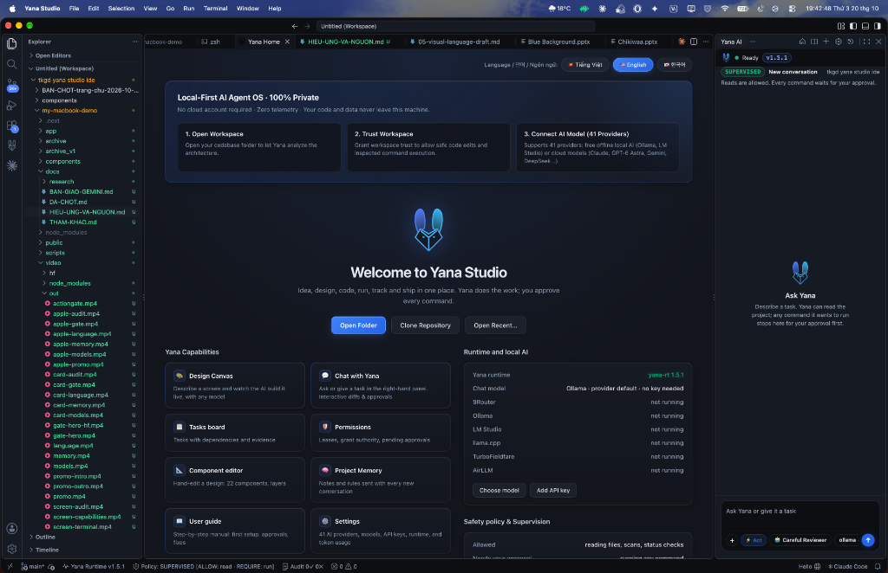

AI Workspace.
Yana Studio v1.7.0 Installers.
Full VS Code extension ecosystem with human-in-the-loop control: AI agents cannot run shell commands or touch files without your explicit approval.
macOS
Bản build tối ưu riêng cho Apple Silicon M1/M2/M3/M4/M5 (macOS 12.0 trở lên).
Windows
Hỗ trợ kiến trúc x64 và ARM64 cho máy Surface / Snapdragon X Elite.
Linux
Đóng gói sẵn cho Ubuntu/Debian (.deb) và chạy độc lập qua AppImage.
CLI & REPOSITORY TOOLS
Command-line Tools Installation (PyPI & Cargo)
Standalone CLI tools that run independently without requiring the desktop application. Enforce governance guardrails on any codebase.
yana-ai — Repository AI Governance Layer
Install the Python CLI to enforce Truth Gate, Action Gate, 170 slash commands, and drift inspection before agents can modify code.
yana-rt — Rust TurnEngine & Terminal
Core runtime engine behind Yana Studio: direct streaming with local Ollama models and decentralized multi-agent coordination.

⚡ Cập nhật Runtime độc lập
Binary lõi yana-rt được biên dịch bằng Rust và có thể cập nhật qua cargo install yana-rt mà không bắt buộc cài lại ứng dụng Studio.
🔒 100% An toàn trên macOS
Lần đầu mở ứng dụng trên Mac, vui lòng chuột phải (Control-click) vào Yana Studio → chọn Open để hệ thống Gatekeeper cấp quyền.
🦙 Hỗ trợ AI On-Device
Tương thích nguyên bản với Ollama (Llama 3.2, Qwen 2.5, DeepSeek R1) giúp anh lập trình hoàn toàn offline không cần internet.